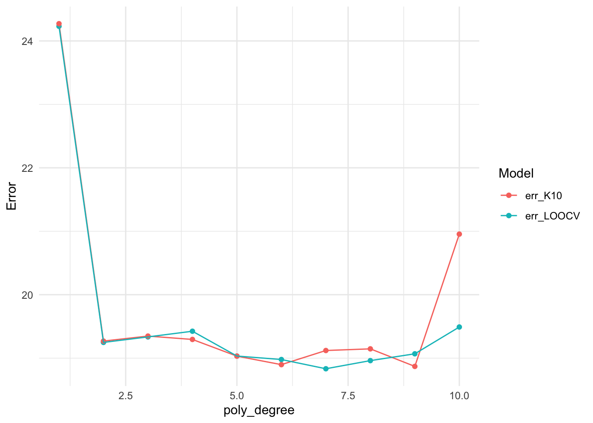

library(ISLR2)
set.seed(1)
attach(Auto)Cross-Validation and the Bootstrap
In this lab, we explore the resampling techniques covered in this chapter. Some of the commands in this lab may take a while to run on your computer.
Leave-One-Out Cross-Validation
The LOOCV estimate can be automatically computed for any generalized linear model using the glm() and cv.glm() functions. In the lab for Chapter 4, we used the glm() function to perform logistic regression by passing in the family = "binomial" argument. But if we use glm() to fit a model without passing in the family argument, then it performs linear regression, just like the lm() function.
library(boot)
glm.fit <- glm(mpg ~ horsepower, data = Auto)
cv.err <- cv.glm(Auto, glm.fit)
cv.err$delta[1] 24.23151 24.23114The cv.glm() function produces a list with several components. The two numbers in the delta vector contain the cross-validation results. In this case the numbers are identical (up to two decimal places) and correspond to the LOOCV statistic given in (5.1). Below, we discuss a situation in which the two numbers differ. Our cross-validation estimate for the test error is approximately \(24.23\).
We can repeat this procedure for increasingly complex polynomial fits. To automate the process, we use the for() function to initiate a for loop which iteratively fits polynomial regressions for polynomials of order \(i=1\) to \(i=10\), computes the associated cross-validation error, and stores it in the \(i\)th element of the vector cv.error. We begin by initializing the vector.
cv.error <- rep(0, 10)
for (i in 1:10) {
glm.fit <- glm(mpg ~ poly(horsepower, i), data = Auto)
cv.error[i] <- cv.glm(Auto, glm.fit)$delta[1]
}
cv.error [1] 24.23151 19.24821 19.33498 19.42443 19.03321 18.97864 18.83305 18.96115
[9] 19.06863 19.49093\(k\)-Fold Cross-Validation
The cv.glm() function can also be used to implement \(k\)-fold CV. Below we use \(k=10\), a common choice for \(k\), on the Auto data set. We once again set a random seed and initialize a vector in which we will store the CV errors corresponding to the polynomial fits of orders one to ten.
set.seed(17)
cv.error.10 <- rep(0, 10)
for (i in 1:10) {
glm.fit <- glm(mpg ~ poly(horsepower, i), data = Auto)
cv.error.10[i] <- cv.glm(Auto, glm.fit, K = 10)$delta[1]
}
cv.error.10 [1] 24.27207 19.26909 19.34805 19.29496 19.03198 18.89781 19.12061 19.14666
[9] 18.87013 20.95520library(tidyverse)── Attaching core tidyverse packages ──────────────────────── tidyverse 2.0.0 ──
✔ dplyr 1.1.4 ✔ readr 2.1.5
✔ forcats 1.0.0 ✔ stringr 1.5.1
✔ ggplot2 3.5.1 ✔ tibble 3.2.1
✔ lubridate 1.9.3 ✔ tidyr 1.3.1
✔ purrr 1.0.2
── Conflicts ────────────────────────────────────────── tidyverse_conflicts() ──
✖ dplyr::filter() masks stats::filter()
✖ dplyr::lag() masks stats::lag()
ℹ Use the conflicted package (<http://conflicted.r-lib.org/>) to force all conflicts to become errorslibrary(ggplot2)cvviz = data.frame(err_LOOCV = cv.error, err_K10 = cv.error.10, poly_degree = seq(1:10))
cvviz = cvviz %>%
pivot_longer(cols = starts_with("err"),
names_to = "Model",
values_to = "Error")
cvviz %>%
ggplot(aes(x = poly_degree, y = Error, color = Model)) +
geom_point() +
geom_line() +
theme_minimal()
Notice that the computation time is shorter than that of LOOCV. (In principle, the computation time for LOOCV for a least squares linear model should be faster than for \(k\)-fold CV, due to the availability of the formula (5.2) for LOOCV; however, unfortunately the cv.glm() function does not make use of this formula.) We still see little evidence that using cubic or higher-order polynomial terms leads to lower test error than simply using a quadratic fit.
The Bootstrap
We illustrate the use of the bootstrap in the simple example of Section 5.2, as well as on an example involving estimating the accuracy of the linear regression model on the Auto data set.
Estimating the Accuracy of a Statistic of Interest
One of the great advantages of the bootstrap approach is that it can be applied in almost all situations. No complicated mathematical calculations are required. Performing a bootstrap analysis in R entails only two steps. First, we must create a function that computes the statistic of interest. Second, we use the boot() function, which is part of the boot library, to perform the bootstrap by repeatedly sampling observations from the data set with replacement.
The Portfolio data set in the ISLR2 package is simulated data of \(100\) pairs of returns, generated in the fashion described in Section 5.2. To illustrate the use of the bootstrap on this data, we must first create a function.
alpha.fn(), takes as input the \((X,Y)\) data as well as a vector indicating which observations should be used to estimate \(\alpha\). The function then outputs the estimate for \(\alpha\) based on the selected observations.
alpha.fn <- function(data, index) {
X <- data$X[index]
Y <- data$Y[index]
(var(Y) - cov(X, Y)) / (var(X) + var(Y) - 2 * cov(X, Y))
}This function returns, or outputs, an estimate for \(\alpha\) based on applying (5.7) to the observations indexed by the argument index. For instance, the following command tells R to estimate \(\alpha\) using all \(100\) observations.
alpha.fn(Portfolio, 1:100)[1] 0.5758321The next command uses the sample() function to randomly select \(100\) observations from the range \(1\) to \(100\), with replacement. This is equivalent to constructing a new bootstrap data set and recomputing \(\hat{\alpha}\) based on the new data set.
set.seed(7)
alpha.fn(Portfolio, sample(100, 100, replace = T))[1] 0.5385326We can implement a bootstrap analysis by performing this command many times, recording all of the corresponding estimates for \(\alpha\), and computing the resulting standard deviation. However, the boot() function automates this approach. Below we produce \(R=1,000\) bootstrap estimates for \(\alpha\).
boot(Portfolio, alpha.fn, R = 1000)
ORDINARY NONPARAMETRIC BOOTSTRAP
Call:
boot(data = Portfolio, statistic = alpha.fn, R = 1000)
Bootstrap Statistics :
original bias std. error
t1* 0.5758321 0.0007959475 0.08969074The final output shows that using the original data, \(\hat{\alpha}=0.5758\), and that the bootstrap estimate for \({\rm SE}(\hat{\alpha})\) is \(0.0897\).
Estimating the Accuracy of a Linear Regression Model
The bootstrap approach can be used to assess the variability of the coefficient estimates and predictions from a statistical learning method. Here we use the bootstrap approach in order to assess the variability of the estimates for \(\beta_0\) and \(\beta_1\), the intercept and slope terms for the linear regression model that uses horsepower to predict mpg in the Auto data set. We will compare the estimates obtained using the bootstrap to those obtained using the formulas for \({\rm SE}(\hat{\beta}_0)\) and \({\rm SE}(\hat{\beta}_1)\) described in Section 3.1.2.
We first create a simple function, boot.fn(), which takes in the Auto data set as well as a set of indices for the observations, and returns the intercept and slope estimates for the linear regression model. We then apply this function to the full set of \(392\) observations in order to compute the estimates of \(\beta_0\) and \(\beta_1\) on the entire data set using the usual linear regression coefficient estimate formulas from Chapter 3. Note that we do not need the { and } at the beginning and end of the function because it is only one line long.
boot.fn <- function(data, index)
coef(lm(mpg ~ horsepower, data = data, subset = index))
boot.fn(Auto, 1:392)(Intercept) horsepower
39.9358610 -0.1578447 The boot.fn() function can also be used in order to create bootstrap estimates for the intercept and slope terms by randomly sampling from among the observations with replacement. Here we give two examples.
set.seed(1)
boot.fn(Auto, sample(392, 392, replace = T))(Intercept) horsepower
40.3404517 -0.1634868 boot.fn(Auto, sample(392, 392, replace = T))(Intercept) horsepower
40.1186906 -0.1577063 Next, we use the boot() function to compute the standard errors of 1,000 bootstrap estimates for the intercept and slope terms.
boot(Auto, boot.fn, 1000)
ORDINARY NONPARAMETRIC BOOTSTRAP
Call:
boot(data = Auto, statistic = boot.fn, R = 1000)
Bootstrap Statistics :
original bias std. error
t1* 39.9358610 0.0544513229 0.841289790
t2* -0.1578447 -0.0006170901 0.007343073This indicates that the bootstrap estimate for \({\rm SE}(\hat{\beta}_0)\) is \(0.84\), and that the bootstrap estimate for \({\rm SE}(\hat{\beta}_1)\) is \(0.0073\). As discussed in Section 3.1.2, standard formulas can be used to compute the standard errors for the regression coefficients in a linear model. These can be obtained using the summary() function.
summary(lm(mpg ~ horsepower, data = Auto))$coef Estimate Std. Error t value Pr(>|t|)
(Intercept) 39.9358610 0.717498656 55.65984 1.220362e-187
horsepower -0.1578447 0.006445501 -24.48914 7.031989e-81The standard error estimates for \(\hat{\beta}_0\) and \(\hat{\beta}_1\) obtained using the formulas from Section 3.1.2 are \(0.717\) for the intercept and \(0.0064\) for the slope. Interestingly, these are somewhat different from the estimates obtained using the bootstrap. Does this indicate a problem with the bootstrap? In fact, it suggests the opposite. Recall that the standard formulas given in Equation 3.8 on page 66 rely on certain assumptions. For example, they depend on the unknown parameter \(\sigma^2\), the noise variance. We then estimate \(\sigma^2\) using the RSS. Now although the formulas for the standard errors do not rely on the linear model being correct, the estimate for \(\sigma^2\) does. We see in Figure 3.8 on page 92 that there is a non-linear relationship in the data, and so the residuals from a linear fit will be inflated, and so will \(\hat{\sigma}^2\). Secondly, the standard formulas assume (somewhat unrealistically) that the \(x_i\) are fixed, and all the variability comes from the variation in the errors \(\epsilon_i\). The bootstrap approach does not rely on any of these assumptions, and so it is likely giving a more accurate estimate of the standard errors of \(\hat{\beta}_0\) and \(\hat{\beta}_1\) than is the summary() function.
Below we compute the bootstrap standard error estimates and the standard linear regression estimates that result from fitting the quadratic model to the data. Since this model provides a good fit to the data (Figure 3.8), there is now a better correspondence between the bootstrap estimates and the standard estimates of \({\rm SE}(\hat{\beta}_0)\), \({\rm SE}(\hat{\beta}_1)\) and \({\rm SE}(\hat{\beta}_2)\).
boot.fn <- function(data, index)
coef(
lm(mpg ~ horsepower + I(horsepower^2),
data = data, subset = index)
)
set.seed(1)
boot(Auto, boot.fn, 1000)
ORDINARY NONPARAMETRIC BOOTSTRAP
Call:
boot(data = Auto, statistic = boot.fn, R = 1000)
Bootstrap Statistics :
original bias std. error
t1* 56.900099702 3.511640e-02 2.0300222526
t2* -0.466189630 -7.080834e-04 0.0324241984
t3* 0.001230536 2.840324e-06 0.0001172164summary(
lm(mpg ~ horsepower + I(horsepower^2), data = Auto)
)$coef Estimate Std. Error t value Pr(>|t|)
(Intercept) 56.900099702 1.8004268063 31.60367 1.740911e-109
horsepower -0.466189630 0.0311246171 -14.97816 2.289429e-40
I(horsepower^2) 0.001230536 0.0001220759 10.08009 2.196340e-21Exercises
Use the Boston data set.
Important: Any function that you pass to boot needs to use indeces
- Based on this data set, provide an estimate for the population mean of
medv. Call this estimate \(\hat{\mu}\)
Provide an estimate of the standard error of \(\hat{\mu}\) . Interpret this result.
Hint: We can compute the standard error of the sample mean by dividing the sample standard deviation by the square root of the number of observations.
- Now estimate the standard error of \(\hat{\mu}\) using the bootstrap. How does this compare to your answer from (b)?
Based on your bootstrap estimate from (c), provide a 95% confidence interval for the mean of
medv. Compare it to the results obtained usingt.test(Boston$medv).Hint: You can approximate a 95% confidence interval using the formula
[\(\hat{\mu}\) - 2SE(\(\hat{\mu}\)), \(\hat{\mu}\) + 2SE(\(\hat{\mu}\))] .
- Based on this data set, provide an estimate, \(\hat{\mu}_{med}\), for the median value of `medv` in the population.
- We now would like to estimate the standard error of \(\hat{\mu}_{med}\). Unfortunately, there is no simple formula for computing the standard error of the median. Instead, estimate the standard error of the median using the bootstrap. Comment on your findings.
- Based on this data set, provide an estimate for the tenth per centile of medv in Boston census tracts. Call this quantity \(\hat{\mu}_{0.1}\). (You can use the quantile() function.)
- Use the bootstrap to estimate the standard error of \(\hat{\mu}_{0.1}\). Comment on your findings.